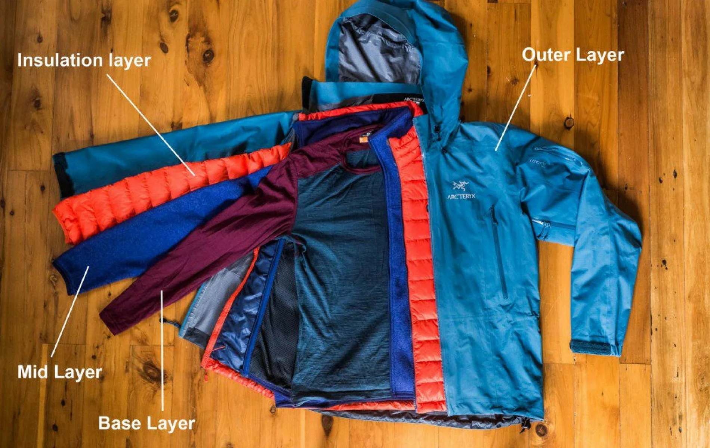

Слои одежды для холода

Система слоев нужна не для «максимального утепления», а для контроля влаги и температуры в движении. Перегрев на подъеме часто опаснее, чем легкий холод на старте.
Базовый слой должен быстро отводить пот, средний — удерживать тепло, внешний — защищать от ветра и осадков. Если один слой не работает, вся система теряет эффективность.
Важен не только материал, но и посадка: слишком свободный базовый слой хуже отводит влагу, а слишком плотный внешний может ограничивать движение и вентиляцию.
Привычка вовремя снимать и добавлять слой — ключ к стабильному состоянию на маршруте. Лучше сделать короткую остановку на регулировку, чем довести одежду до полного намокания изнутри.
Распространенная ошибка — идти весь день в одной конфигурации. В горах условия меняются быстро, поэтому гибкость системы важнее количества «теплых» вещей.
Перед выходом полезно заранее собрать 2–3 рабочие комбинации слоев под подъем, привал и плохую погоду. Это ускоряет решения, когда начинается ветер или снег.